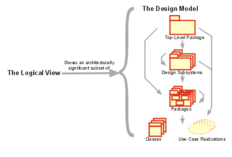

| Concept: Logical View |
 |
|
| Related Elements |
|---|
To provide a basis for understanding the structure and organization of the design of the system, an architectural view called the Logical View is used in the Analysis & Design workflow. There is only one logical view of the system, which illustrates the key use-case realizations, subsystems, packages and classes that encompass architecturally significant behavior. The logical view is refined during each iteration.
 The logical view shows an architecturally significant subset of the design model, i.e. a subset of the classes, subsystems and packages, and use-case realizations. There are four additional views, the Use-Case View (handled in the Requirements workflow), and the Process View, Deployment View, and Implementation View, handled in the Analysis & Design, and Implementation workflows. The architectural views are documented in a Software Architecture Document. You may add different views, such as a security view, to convey other specific aspects of the software architecture. So in essence, architectural views can be seen as abstractions or simplifications of the models built, in which you make important characteristics more visible by leaving the details aside. The architecture is an important means for increasing the quality of any model built during system development. |
© Copyright IBM Corp. 1987, 2006. All Rights Reserved. |